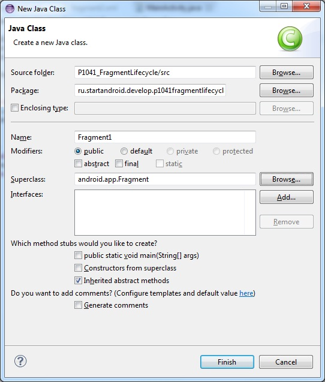
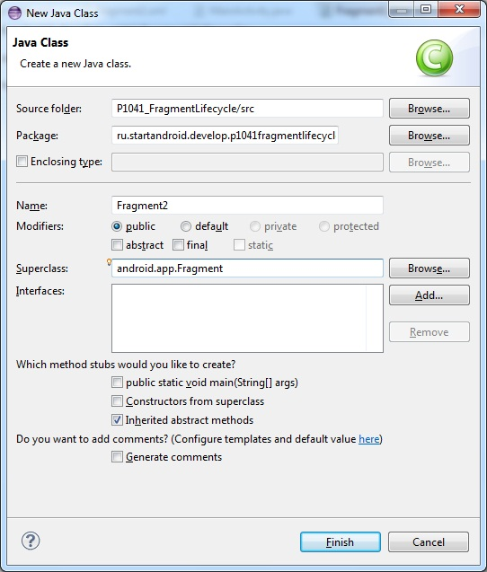
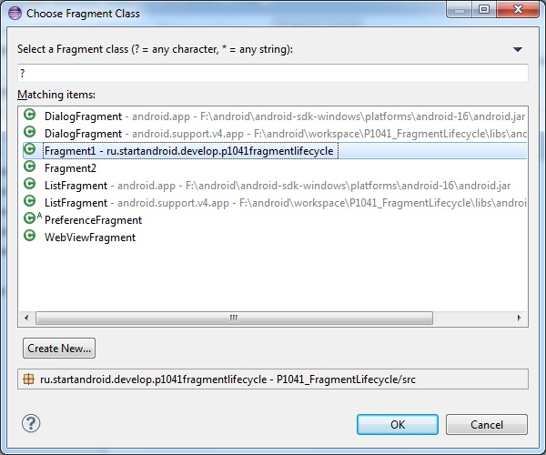
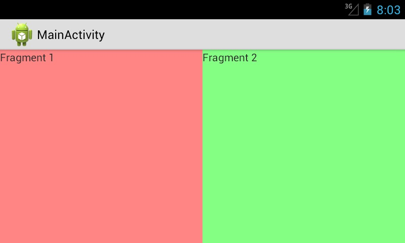

В этом уроке:
- используем фрагменты
- разбираемся в их lifecycle
Фрагменты – одно из главных новшеств Android 3. Можно рассматривать их как мини-Activity, которые располагаются в основном Activity и имеют свой lifecycle, немного отличающийся от обычного Activity. В этом уроке разместим пару фрагментов в Activity и разберемся в lifecycle-методах.
В 4-й версии фрагменты никуда не делись, а AVD для 3-й версии какие-то совсем суровые и тяжелые, поэтому для разработки и тестирования будем использовать версию Android 4.1 (API 16). Если у вас нет такой версии в списке доступных, то открывайте Window > Android SDK Manager и скачивайте ее там.
Создадим AVD 4.1

Создадим проект:
Project name: P1041_FragmentLifecycle
Build Target: Android 4.1
Application name: FragmentLifecycle
Package name: ru.startandroid.develop.p1041fragmentlifecycle
Create Activity: MainActivity
В strings.xml добавим пару строк:
<string name="frag1_text">Fragment 1</string>
<string name="frag2_text">Fragment 2</string>Создадим пару фрагментов. Для этого нам необходимо создать для них layout-файлы и классы с предком android.app.Fragment.
Создаем layout-файлы, как обычно.
fragment1.xml:
<?xml version="1.0" encoding="utf-8"?>
<LinearLayout
xmlns:android="http://schemas.android.com/apk/res/android"
android:layout_width="match_parent"
android:layout_height="match_parent"
android:background="#77ff0000"
android:orientation="vertical">
<TextView
android:id="@+id/textView1"
android:layout_width="wrap_content"
android:layout_height="wrap_content"
android:text="@string/frag1_text">
</TextView>
</LinearLayout>fragment2.xml:
<?xml version="1.0" encoding="utf-8"?>
<LinearLayout
xmlns:android="http://schemas.android.com/apk/res/android"
android:layout_width="match_parent"
android:layout_height="match_parent"
android:background="#7700ff00"
android:orientation="vertical">
<TextView
android:id="@+id/textView2"
android:layout_width="wrap_content"
android:layout_height="wrap_content"
android:text="@string/frag2_text">
</TextView>
</LinearLayout>Фрагменты будут содержать TextView с текстом, и мы сделали цветной фон для наглядности.
Теперь классы. Если Activity наследует android.app.Activity, то фрагменты наследуют android.app.Fragment.
Создаем Fragment1:

и Fragment2

Заполняем код. Fragment1.java:
package ru.startandroid.develop.p1041fragmentlifecycle;
import android.app.Activity;
import android.app.Fragment;
import android.os.Bundle;
import android.util.Log;
import android.view.LayoutInflater;
import android.view.View;
import android.view.ViewGroup;
public class Fragment1 extends Fragment {
final String LOG_TAG = "myLogs";
@Override
public void onAttach(Activity activity) {
super.onAttach(activity);
Log.d(LOG_TAG, "Fragment1 onAttach");
}
public void onCreate(Bundle savedInstanceState) {
super.onCreate(savedInstanceState);
Log.d(LOG_TAG, "Fragment1 onCreate");
}
public View onCreateView(LayoutInflater inflater, ViewGroup container,
Bundle savedInstanceState) {
Log.d(LOG_TAG, "Fragment1 onCreateView");
return inflater.inflate(R.layout.fragment1, null);
}
public void onActivityCreated(Bundle savedInstanceState) {
super.onActivityCreated(savedInstanceState);
Log.d(LOG_TAG, "Fragment1 onActivityCreated");
}
public void onStart() {
super.onStart();
Log.d(LOG_TAG, "Fragment1 onStart");
}
public void onResume() {
super.onResume();
Log.d(LOG_TAG, "Fragment1 onResume");
}
public void onPause() {
super.onPause();
Log.d(LOG_TAG, "Fragment1 onPause");
}
public void onStop() {
super.onStop();
Log.d(LOG_TAG, "Fragment1 onStop");
}
public void onDestroyView() {
super.onDestroyView();
Log.d(LOG_TAG, "Fragment1 onDestroyView");
}
public void onDestroy() {
super.onDestroy();
Log.d(LOG_TAG, "Fragment1 onDestroy");
}
public void onDetach() {
super.onDetach();
Log.d(LOG_TAG, "Fragment1 onDetach");
}
}Fragment2.java:
package ru.startandroid.develop.p1041fragmentlifecycle;
import android.app.Activity;
import android.app.Fragment;
import android.os.Bundle;
import android.util.Log;
import android.view.LayoutInflater;
import android.view.View;
import android.view.ViewGroup;
public class Fragment2 extends Fragment {
final String LOG_TAG = "myLogs";
@Override
public void onAttach(Activity activity) {
super.onAttach(activity);
Log.d(LOG_TAG, "Fragment2 onAttach");
}
public void onCreate(Bundle savedInstanceState) {
super.onCreate(savedInstanceState);
Log.d(LOG_TAG, "Fragment2 onCreate");
}
public View onCreateView(LayoutInflater inflater, ViewGroup container,
Bundle savedInstanceState) {
Log.d(LOG_TAG, "Fragment2 onCreateView");
return inflater.inflate(R.layout.fragment2, null) ;
}
public void onActivityCreated(Bundle savedInstanceState) {
super.onActivityCreated(savedInstanceState);
Log.d(LOG_TAG, "Fragment2 onActivityCreated");
}
public void onStart() {
super.onStart();
Log.d(LOG_TAG, "Fragment2 onStart");
}
public void onResume() {
super.onResume();
Log.d(LOG_TAG, "Fragment2 onResume");
}
public void onPause() {
super.onPause();
Log.d(LOG_TAG, "Fragment2 onPause");
}
public void onStop() {
super.onStop();
Log.d(LOG_TAG, "Fragment2 onStop");
}
public void onDestroyView() {
super.onDestroyView();
Log.d(LOG_TAG, "Fragment2 onDestroyView");
}
public void onDestroy() {
super.onDestroy();
Log.d(LOG_TAG, "Fragment2 onDestroy");
}
public void onDetach() {
super.onDetach();
Log.d(LOG_TAG, "Fragment2 onDetach");
}
}В обоих фрагментах просто выводим в лог вызовы всех lifecycle-методов. Чуть дальше рассмотрим эти методы подробнее.
В методе onCreateView система спрашивает у нас, что ей отображать внутри фрагмента. Мы сообщаем системе, что хотим видеть во фрагменте содержимое соответствующего layout-файла. Для этого мы сами создаем View с помощью inflater и отдаем его системе. Т.е. по смыслу это аналог метода setContentView, который мы вызываем в Activity. Только здесь нам приходится самим создавать View, а не просто передавать идентификатор layout-файла.
Все (layout и классы) для фрагментов готово. Можем поместить их в основной layout-файл Activity. Открываем main.xml, делаем корневым горизонтальный LinearLayout и помещаем в него пару элементов Fragment (вкладка Layouts). При этом появится диалог, в котором надо будет указать какой класс используется для фрагмента.

Указываем для первого класс Fragment1, а для второго Fragment2.
Выровняем фрагменты по ширине с помощью веса. В итоге должен получиться такой main.xml:
<?xml version="1.0" encoding="utf-8"?>
<LinearLayout
xmlns:tools="http://schemas.android.com/tools"
xmlns:android="http://schemas.android.com/apk/res/android"
android:id="@+id/LinearLayout1"
android:layout_width="match_parent"
android:layout_height="match_parent"
android:orientation="horizontal">
<fragment
android:name="ru.startandroid.develop.p1041fragmentlifecycle.Fragment1"
android:layout_width="wrap_content"
android:layout_height="match_parent"
android:layout_weight="1">
</fragment>
<fragment
android:name="ru.startandroid.develop.p1041fragmentlifecycle.Fragment2"
android:layout_width="wrap_content"
android:layout_height="match_parent"
android:layout_weight="1">
</fragment>
</LinearLayout>В MainActivity.java также добавляем запись в лог всех lifecycle методов:
package ru.startandroid.develop.p1041fragmentlifecycle;
import android.app.Activity;
import android.os.Bundle;
import android.util.Log;
public class MainActivity extends Activity {
final String LOG_TAG = "myLogs";
public void onCreate(Bundle savedInstanceState) {
super.onCreate(savedInstanceState);
setContentView(R.layout.main);
Log.d(LOG_TAG, "MainActivity onCreate");
}
protected void onStart() {
super.onStart();
Log.d(LOG_TAG, "MainActivity onStart");
}
protected void onResume() {
super.onResume();
Log.d(LOG_TAG, "MainActivity onResume");
}
protected void onPause() {
super.onPause();
Log.d(LOG_TAG, "MainActivity onPause");
}
protected void onStop() {
super.onStop();
Log.d(LOG_TAG, "MainActivity onStop");
}
protected void onDestroy() {
super.onDestroy();
Log.d(LOG_TAG, "MainActivity onDestroy");
}
}Все сохраняем. Далее, я сначала запустил эмулятор через AVD, повернул его в горизонтальную ориентацию, затем запустил приложение. Но, в принципе, можно все делать и в вертикальной ориентации. Скрин будет чуть другой, а логи те же.

Все как и заказывали. В горизонтальном LinearLayout размещены пара фрагментов. Содержимое фрагментов взято из layout-файлов fragment1 и fragment2.
Смотрим логи:
Fragment1 onAttach
Fragment1 onCreate
Fragment1 onCreateView
Fragment2 onAttach
Fragment2 onCreate
Fragment2 onCreateView
MainActivity onCreate
Fragment1 onActivityCreated
Fragment2 onActivityCreated
MainActivity onStart
Fragment1 onStart
Fragment2 onStart
MainActivity onResume
Fragment1 onResume
Fragment2 onResume
Первым делом для фрагментов вызываются методы:
onAttach – фрагмент прикреплен к Activity и получает ссылку на него. В дальнейшем мы всегда можем получить ссылку на Activity, вызвав метод getActivity().
onCreate - это аналог метода onCreate у Activity, но здесь мы пока не имеем доступа к UI-элементам
onCreateView – здесь вы создаете View, который будет содержимым фрагмента, и отдаете его системе
Далее срабатывают метод Activity – onCreate, после него метод фрагментов onActivityCreated – сообщает фрагменту о том, что Activity создано и можно работать с UI-элементами
Далее метод Activity – onStart, после него onStart – аналогичен методу Activity, фрагмент виден пользователю
Далее метод Activity – onResume, после него onResume - аналогичен методу Activity, фрагмент доступен для взаимодействия.
Жмем кнопку назад – закрываем приложение:
Fragment1 onPause
Fragment2 onPause
MainActivity onPause
Fragment1 onStop
Fragment2 onStop
MainActivity onStop
Fragment1 onDestroyView
Fragment1 onDestroy
Fragment1 onDetach
Fragment2 onDestroyView
Fragment2 onDestroy
Fragment2 onDetach
MainActivity onDestroy
Сначала для фрагментов и Activity вызываются методы onPause и onStop. Это значит, что фрагменты и Activity более недоступны для взаимодействия, а потом не видны пользователю.
Затем для фрагментов вызываются три метода по уничтожению:
onDestroyView – сообщает нам, что View, которое мы создавали в onCreateView, более недоступно
onDestroy – аналог метода onDestroy у Activity
onDetach – фрагмент отсоединен от Activity
И в конце вызывается метод onDestroy для Activity.
Т.е. основные lifecycle методы схожи для Activity и фрагмента. Но есть и некоторые различия, связанные с привязкой фрагмента к Activity.
Фрагменты, так же как и Activity могут сохранять данные при своем пересоздании, например при смене экрана. Для записи используется метод onSaveInstanceState. А прочесть данные можно из Bundle в методах onCreate, onCreateView или onActivityCreated.
А чтобы при пересоздании сохранить сам объект класса Fragment, используйте метод setRetainInstance. Если передать в него true, то при пересоздании фрагмента не будут вызваны методы onDestroy и onCreate, и не будет создан новый экземпляр класса Fragment.